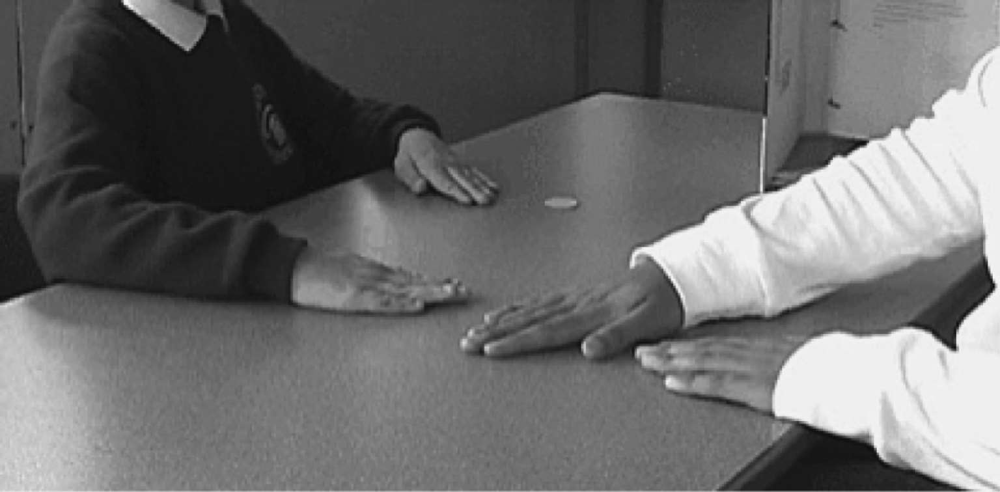
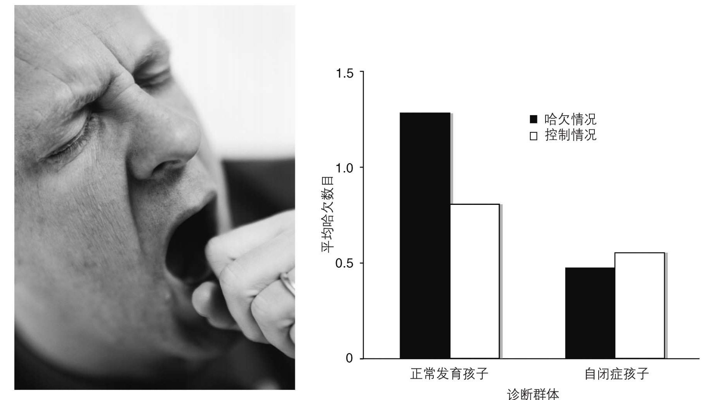

第三大理论是从帕尔马的研究者们对猴子所做的突破性工作开始的。“有样学样”（Monkey see monkey do）是一句俗语，但谁会料想这句话包含了关于大脑的一个基本真理呢？帕尔马团队的研究者们记录到大脑一处特别区域的神经元放电。令研究者们自己也感到吃惊的是，他们发现无论是猴子看见实验者的动作，比如抓一个花生，还是猴子自己抓花生，都会引起同一个细胞的活动。这些脑细胞充当了镜子。
由于猴脑和人脑非常相似，这是个极为重要的发现。即使还不能直接记录到人的大脑细胞的放电，我们可以假定在人类大脑中也有个镜像系统。
观察他人做动作时，我们大脑的镜像系统会自动变得活跃，这样我们就能准备好自己完成动作。这一点非常有用，因为它使得我们能以直接的方式来理解他人的动作。我们自己做动作时，就像我们观察他人做动作时一般，同样的神经元活跃了。
因此，镜像系统使得看和做之间建立起自动连接，这个机制使我们能理解他人动作的意义。换句话说，就镜像神经元而言，它们并不在意这个动作是我们自己完成还是他人完成的。
但不止于此。镜像系统理论不只适用于动作。想到有一个类似的机制来负责理解他人的内在意图，甚至内在情感，真是令人兴奋。毕竟，意图和情感通常都伴随着脸上和身体的动作。进一步说，大脑镜像系统出了问题，是否就造成移情的缺乏？通常，移情的定义是一种无意识地复制他人情感的方式。这个机制发生的问题能否解释自闭症的很多社交困难呢？这就是第三大理论。
这第三大理论证据还很不完善，而且对它有利或不利的发现都有。这里讲不利的发现。一种预测是，自闭症孩子会表现出不能很好理解他人的目标和由目标驱动的动作。还有，他们的动作模仿能力应该较弱。这两者在严格实验条件下似乎都站不住脚。
图13展现出一个自闭症男孩成功地精确模仿实验者的动作。实验者的目的是指向桌上一枚特定的硬币，对此，即使很小的自闭症孩子也能自动理解。他们能模仿指向的动作。与正常发育的孩子类似，他们更注意的是目标而不是实验者用的那只手。他们更多使用距离目标硬币更近的那只手，不会用另一只手，即使实验者自己使用了那只手。

图13 手部动作模仿。实验者用任意一只手指向桌上的某枚硬币。孩子们被要求做同样的动作。有自闭症谱系障碍的孩子和正常发育的孩子表现完全一样。他们能理解实验者的目的，指向同样的硬币，但会使用他们的优势手
令人欣慰的是，我们得知自闭症孩子能理解目标，即使他们很难理解人们行为背后更复杂的动机。然而，这是一个在命令下模仿的例子，而不是典型社交情境下的自发模仿。实际上，自闭症孩子的模仿能力有缺失，他们抑制模仿的能力也有缺失。例如，这一点可以从自闭症的经典特征之一—模仿言语的倾向看出来。造成模仿异常的更深层原因可能跟心盲有关。自闭症孩子很难理解在特定交流情境下邀请或禁止模仿的信号。
情感共振
我们再来看看有利的发现。在解释为什么自闭症会伴随着社交场景中拙劣的情感分享时，碎镜理论特别吸引人。当自闭症人士观察他人的面部表情和手势时，他们在镜像系统中明显表现出较低的活跃程度。这项发现还有待复制实验的进一步研究。它会帮助我们解释自闭症中明显的情感联结的缺乏。
对社交障碍的描述中经常出现的主题之一是缺乏情感共振。我们都知道与另一人情感同步时闪耀着温暖光芒的感觉。相反，如果你与自闭症人士共同生活，最难忍受的事情之一就是他们对别人情感明显的冷漠。有一位患有阿斯伯格综合征的男性安德鲁，他妻子安杰拉在她父亲去世时极其沮丧低落。安德鲁毫不同情，并大声轻蔑地谈论岳父，说都是岳父自己的错，因为吸烟才患上癌症。他从不安慰妻子，而且对她没有完成一些日常事务感到恼火。具有讽刺意味的是，安德鲁对他人的痛苦非常有意识，但只是在抽象层面上。他一直都给非洲的一家慈善机构慷慨捐款。
显而易见，安德鲁能做到的抽象形式的移情，与用体态语表达出、如传染般让人感受到的对他人感情的移情形式大相径庭。镜像系统似乎能为这种传染提供机制。
人们所知的一个非常有传染性的面部动作是打哈欠。它连一种情感都算不上，只是一种不需要学习的原始反射。日本研究者们把静止的打哈欠面庞的图片给自闭症儿童看，并记录下他们打哈欠的倾向。结论显示在图14中。自闭症孩子受到的传染比正常发育的孩子少得多。这项发现还需要在成人身上复制。现在也有关于情感的类似实验正在展开。
第三大理论的问题
碎镜理论还很新。它还需要加以改进，才能解释自闭症中哪些社交互动出了问题。和另外两大理论一样，它不能解释自闭症涵盖的贫乏社交生活当中的所有问题。然而，它给出了一个激动人心的可能性：它能帮我们理解为什么在自闭症中奇怪地缺乏情感回应。有可能这个理论在未来会定义一种认知的表现型，最终找到配对的基因型。可以想象一个人展现出所有三种认知的表现型、心智化失败、缺乏社交驱动以及镜像系统失败。也可以想象在自闭症谱系上不同部位的人，他们仅切合其中一种。

图14
左：看见有人打哈欠，我们通常感觉自己也想打哈欠
右：与正常发育的孩子相比，有自闭症谱系障碍的孩子看脸部打哈欠和仅仅张开嘴巴的图片打的传染性哈欠更少